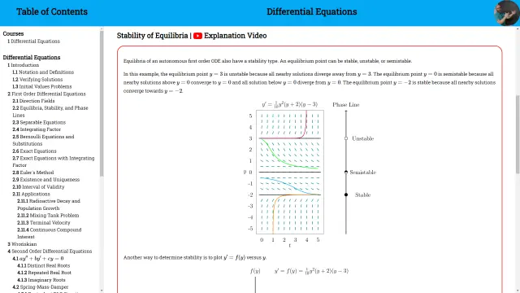
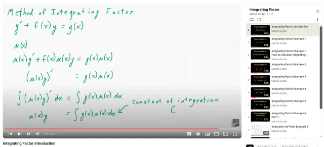
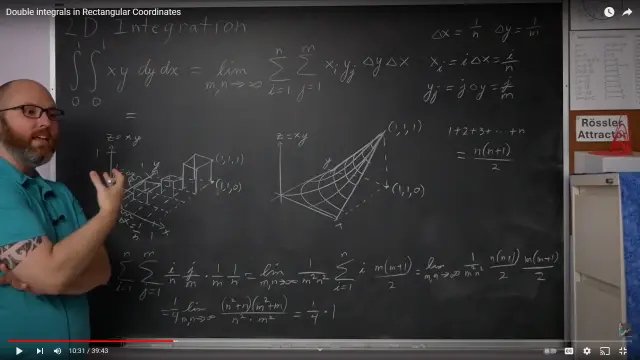

Table of Contents
Maths Survival Guide

NARROW DISPLAY WARNING
You are most likely using a tablet or mobile device in portrait orientation. This website is best viewed using a typical computer screen with the browser window maximized.
Viewing this website in portrait orientation can cause problems with equations being longer than the screen width (you can scroll to the right), images being poorly sized, and the font size of maths text being much smaller than regular text. If your only option is a tablet or mobile device, your viewing experience will be better if you view this website in landscape orientation. You might need to refresh the page to fix any problems after rotating.
This website is for university level mathematics courses taken by most STEM students, from a first course in calculus to differential equations. The website organizes all the individual topics and YouTube videos so they are easy to navigate.
Topics can be found in the Table of Contents on the left organized in a typical order for that course. When you hover over links to pages, the text will become underlined.
These pages have a very high level description of a topic, but their real purpose is to provide links for all the videos and playlists on YouTube.
The page for a topic will have written a explanation of the concept, but most of the content is examples and video solutions hosted on YouTube. The videos are in the format of watching a private tutor complete a homework problem by handwriting in front of you.
If you prefer the traditional lecture format (or you missed a lecture), topics are covered in lectures at the chalkboard with tens of lectures for an entire course.
There are some high quality resources on the internet, which include lectures, recorded videos of pencil and paper solutions, and free textbooks, but the materials can be inconsistent and incomplete, so students have trouble finding them. Even worse, many of the resources are plain wrong, which students often can't distinguish. The worst quote I ever got from a student describing a paid subscription website with solutions to the problems in their textbook was, "For every problem, there's usually at least five contributed solutions, and usually, at least one of them is right." Suffice to say, things could be better.
I wanted to remedy this. Also, not only do I have a good understanding of mathematics, I'm a good teacher. I created this website for students with poor high school maths teachers, or working while in college, or needing to review a prerequisite course, or sick during lectures, or whatever, to succeed, and these common maths courses won't be the insurmountable obstacle to their STEM studies.